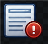
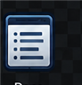
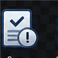

Lokalny anonimizator polskich danych osobowych — reguły, sumy kontrolne, opcjonalne lokalne AI

Open Source · MITUsuń dane osobowe z tekstu — zanim wkleisz go do czatu, e-maila czy formularza.
lub upuść plik (TXT, DOCX, PDF) w dowolnym miejscu strony
reguły, sumy kontrolne, opcjonalny lokalny NER
kolorowe znaczniki zamiast danych osobowych
skopiuj bezpieczny tekst lub pobierz plik
kolor znacznika = kategoria

Osoby1 typ danych Kontakt2 typy danych Identyfikatory4 typy danych Finanse1 typ danych Adres i czas3 typy danychanaliza na bieżąco, podczas pisania
najedź na znacznik, by poznać powód wykrycia

podsumowanie wykryć w tym tekście
domyślnie wszystko — odznaczone typy zostaną widoczne w wyniku
lokalny NER — rzadkie i odmienione formy
Opcjonalna usługa uruchamiana na Twoim komputerze — folder services/ner
w repozytorium, start jedną komendą: docker compose up -d.
Gdy usługa nie działa, anonimizacja opiera się na warstwie regex + sumy kontrolne.
11 typów danych w 5 kategoriach — każdy identyfikator z walidacją sumy kontrolnej
| Dane | Kategoria | Jak rozpoznaje | Znacznik w tekście |
|---|---|---|---|
| PESEL | identyfikatory | 11 cyfr + walidacja sumy kontrolnej | [PESEL] |
| NIP | identyfikatory | 10 cyfr (także z myślnikami) + suma kontrolna | [NIP] |
| REGON | identyfikatory | 9/14 cyfr + suma kontrolna | [REGON] |
| Nr dowodu osobistego | identyfikatory | 3 litery + 6 cyfr + suma kontrolna | [NR-DOWODU] |
| IBAN / nr konta | finanse | walidacja mod 97 lub kontekst „konto/rachunek” | [NR-KONTA] |
| kontakt | wzorzec adresu | [EMAIL] | |
| Telefon | kontakt | 9 cyfr, opcjonalnie +48 | [TELEFON] |
| Adres | adres i czas | ul./al./os./pl. + nazwa + numer | [ADRES] |
| Kod pocztowy | adres i czas | XX-XXX | [KOD-POCZTOWY] |
| Data urodzenia | adres i czas | data z kontekstem „ur./urodzony” | [DATA-URODZENIA] |
| Imię i nazwisko | osoby | słownik ~200 imion i ~230 nazwisk (z odmianą) + wyzwalacze („nazywam się”, „Pan/Pani”); opcjonalnie lokalny NER | [IMIĘ I NAZWISKO] |
sumy kontrolne + strażnik kontekstu
Walidacja sum kontrolnych odróżnia prawdziwy PESEL czy NIP od przypadkowego ciągu cyfr (sygnatury akt, numery przepisów). Strażnik kontekstu pilnuje, żeby „art. 123 456 789” nie został uznany za telefon.
narzędzie pomocnicze, nie gwarancja
Wykrywanie imion i nazwisk jest heurystyczne: rzadkie nazwisko bez imienia ze słownika i bez wyzwalacza kontekstu może nie zostać zamaskowane. Numery w nietypowych formatach też mogą się prześlizgnąć. Zawsze przejrzyj wynik, zanim go udostępnisz.
drobiazgi, które przyspieszają pracę